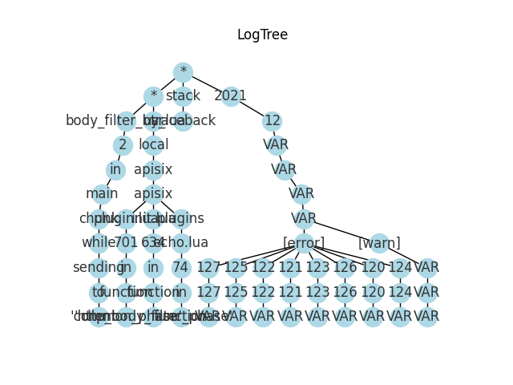

在学习了Spark以及一些日志分析算法后，萌生了对一些算法在spark上进行并行化实现的想法
实际操作时发现从spark的简单示例到真实将使用for循环实现的算法在spark使用map等操作来进行代替还是需要挺多技巧的，本文尝试从elasticsearch获取日志数据，通过对日志分析算法中的AECID-PG这一基于树的日志解释器生成算法进行spark实现来计算kubernetes环境下各个pod对应日志的树解释器
其间参考了一些其他算法的spark实现进行学习，Apriori实现，朴素贝叶斯算法以及之前学习GBDT时参考的FATE secureboost
Spark数据处理思路
Apriori 频繁项集挖掘并行化实现思路
常规Apriori算法计算频繁k项集需要从频繁1项集开始逐次递加项数，每次计算k+1项集时，需要根据频繁k项集通过扫描整个数据集来生成候选集并进行候选集的支持度计算，于是支持度最小的候选项便是频繁k+1项集
可以看出常规算法在数据集较大时会在支持度计算部分消耗大量时间，因此要进行并行化改造的关键就在于对该部分设计并行化算法
https://www.cnblogs.com/brooksj/p/spark-Apriori.html 并行化设计的思路主要是考虑将对于支持度计数的过程使用wordcount来进行统计，通过flatmap操作生成候选集，然后通过map和reduceByKey进行支持度的统计
secureboost并行化实现思路
FATE项目的secureboost基于spark平台实现了联邦的GBDT算法，可以说是在spark上实现复杂算法的典型案例了（当然也是因为GBDT天然对并行化的支持）
secureboost算法实现具体也可以参考我的另外一篇文章 GBDT协作学习实现，主要实现思路便是对所有样本计算梯度，整合成直方图的形式进行分裂收益的计算和最佳分裂点的选择
思路整理
- 因为在进行spark的transformation时只能并行化的对RDD内数据进行处理，不能对共享进行写操作，因此也无法支持复杂的逻辑，这是spark进行分布式批量计算所必然的设计，所以在进行设计时一个重要的问题就是，对算法复杂逻辑和对大量数据进行处理时必须藉由并行化来保证时间开销的平衡
- 算法在处理大量数据集时，限制主要在于从全部数据中进行相关值的计算，而进行算法的spark实现也是主要将这部分通过spark的transformer和action两种操作替代该部分的计算，而其他设计有限量数据的或者对提取到的类似梯度或统计量的数值进行处理的算法部分则没有必要额外使用spark来实现
- 所以，一般思路便是，先对全部数据的RDD集通过transformation以及action操作得到一个概括性的数据结构，例如GBDT算法的直方图，基于这个概括性的数据结构来进行复杂的算法流程，计算结果再通过transformation分配给RDD的各个元素，至此可能完成了算法的一次循环
- 另外，还需要考量在spark的工作流中合适的位置进行数据持久化
算法实现
https://github.com/jacoeus/SparkLogPG
AECID-PG算法介绍参考另一篇博客日志分析算法学习，主要方法时将各行日志按词元token进行划分后根据词元密度，即前缀相同的日志中该词元出现的比例来判断该词元是否可变或者静态的，据此来建立一棵树，每个节点对应一个词元，每条路径对应一种日志模板
于是，将该算法进行spark实现的主要问题在于：并行化计算词元密度、将词元数据与日志树关联以及对树的每一层要进行一次计算（action）导致的数据持久化问题
- 在计算词元密度时，需要考虑计算当前token在与其相同前缀的所有日志行中出现的比例（不能统计该token在当前层出现的数量），因此需要获取相同前缀的日志行数量和在该前缀下统计各token的数量。因此在进行词元计算时，我采用将前缀（路径节点id）和当前token作为RDD的key来进行countByKey的统计，同时在日志树对应的父节点保存该前缀的数量以便下层循环时取用，如此实现并行化次元密度的计算
- 为了实现词元数据与日志树的关联，我采用将日志树节点通过id进行标识的方法，每次计算得到当前token对应的节点后，将节点id保存在RDD的键值(pre,roken_list)中前缀pre的最后一位来进入下一层的循环
- 数据持久化方面因为在每一层的循环中都要做一次countByKey的action操作，如果不进行持久化的话在每次循环在countByKey会重复之前循环的transformation操作，但进行持久化的话每循环一次，仅为了一次action操作就需要进行持久化，频繁持久化可能也会影响效率，我这里是简单的采用持久化的方案，对每一层计算得到的RDD就进行持久化并释放上一层的持久化，更优的方案需要之后探索
#TODO
算法流程
1 | RDD <- 日志数据 |
结果示例
在kubernetes取了apisix一个组件pod的日志进行日志树生成，这里取了前10层的日志树进行简单的可视化
